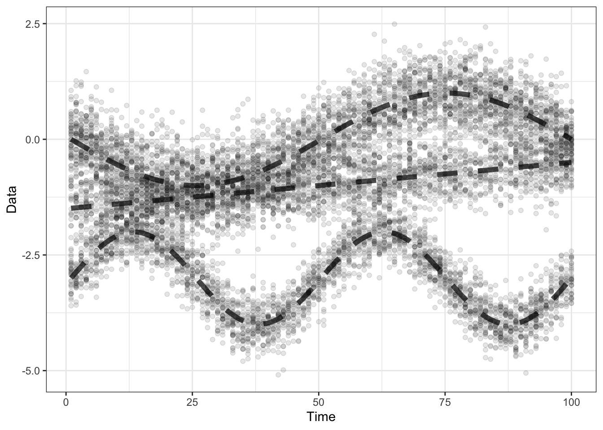

4 Generating and plotting data
4.1 1d data
4.1.1 Generating 1d data
This function generates synthetic 1-dimensional data, and returns it in a “long”
format matrix, with columns time, y, mu, and cluster. The latter two are
the true underlying parameters.
#' Generates some synthetic 1-dimensional data with three clusters. Returns a
#' data frame with (1) time, (2) Y (3) mu (4) cluster assignments.
#'
#' @param TT Number of time points.
#' @param nt Number of particles at each time.
#' @param offset Defaults to 0. How much to push up cluster 1.
#' @param return_model If true, return true cluster means and probabilities
#' instead of data.
#'
#' @return long matrix with data or model.
#' @export
gendat_1d <- function(TT, ntlist, offset = 0, return_model = FALSE,
sd3=NULL){
## Basic checks
stopifnot(length(ntlist) == TT)
prob_link1 = rep(NA, TT)
prob_link1[1] = 2
for(tt in 2:floor(TT/2)){
prob_link1[tt] = prob_link1[tt-1] + (1/TT)
}
for(tt in (floor(TT/2)+1):TT){
prob_link1[tt] = prob_link1[tt-1] - .5*(1/TT)
}
prob_link2 = sapply(1:TT, function(tt) 3 - 0.25*(tt/TT))
prob_link3 = sapply(1:TT, function(tt) 2.5)
linkmat = cbind(prob_link1, prob_link2, prob_link3) ##%>% matplot()
mysum = exp(linkmat) %>% rowSums()
cluster_prob1 = exp(prob_link1) / mysum
cluster_prob2 = exp(prob_link2) / mysum
cluster_prob3 = exp(prob_link3) / mysum
probs = cbind(cluster_prob1, cluster_prob2, cluster_prob3)
colnames(probs) = 1:3
sd1 = 0.4
sd2 = 0.5
if(is.null(sd3)) sd3 = 0.35
## if(!is.null(sd3)) sd3 = 1/1.5 ## The ratio of amplitude:data-standard-deviation is about
## ## $1.50695$.
probs_long = as_tibble(probs) %>%
add_column(time = 1:TT) %>%
pivot_longer(-"time", names_to = "cluster", values_to = "prob")
probs_long %>% ggplot() + geom_line(aes(x=time,y=prob, group=cluster, col=cluster)) + ylim(c(0,1))
## Make cluster means, by time
means <- matrix(NA, TT, 3)
for(ii in 1:3){
for(tt in 1:TT){
means[tt, 1] <- offset + tt/TT - 1.5
means[tt, 2] <- sin(seq(-1, 1, length.out = TT)[tt] * 3.1415)
means[tt, 3] <- -3+sin(seq(-1, 1, length.out = TT)[tt] * 6.282)
}
}
colnames(means) = c(1:3)
means_long = as_tibble(means) %>%
add_column(time = 1:TT) %>%
pivot_longer(-"time", names_to = "cluster", values_to = "mean")
model = full_join(means_long, probs_long, by = c("time", "cluster"))
model = model %>% left_join(tibble(cluster = c("1", "2", "3"),
sd = c(sd1, sd2, sd3)),
by = "cluster") ## Does this work?
if(return_model) return(model)
ys <- lapply(1:TT, FUN = function(tt){
Y <- vector(mode = "list", length = 2)
mu <- vector(mode = "list", length = 2)
clusters_count <- rmultinom(n = 1, size = ntlist[tt], prob = probs[tt,])
for(ii in 1:3){
if(ii == 1){
mn = means[tt,ii, drop=TRUE]
Y[[ii]] <- replicate(clusters_count[ii,1], mn + rnorm(1, mean=0, sd = sd1))
mu[[ii]] <- rep(mn, clusters_count[ii,1])
}
if(ii == 2){
mn = means[tt,ii, drop=TRUE]
Y[[ii]] <- replicate(clusters_count[ii,1], mn + rnorm(1, mean=0, sd = sd2))
mu[[ii]] <- rep(mn, clusters_count[ii,1])
}
if(ii == 3){
mn = means[tt,ii, drop=TRUE]
Y[[ii]] <- replicate(clusters_count[ii,1], mn + rnorm(1, mean=0, sd = sd3))
mu[[ii]] <- rep(mn, clusters_count[ii,1])
}
}
Y <- unlist(Y)
mu <- unlist(mu)
cluster <- rep(1:3, times = clusters_count)
one_df = tibble(time = tt, Y = Y, mu = mu, cluster = cluster)
return(one_df)
}) %>% bind_rows()
return(ys)
}dt2ylist() is a helper that takes the output generated from gendat_1d(), and
splits it by the time column to create a ylist object, which is a \(T\)-length
list of \(n_t \times d\) matrices.
#' Converting to a list of matrices, \code{ylist}, to input to \code{flowtrend()}.
#'
#' @param dt Output from \code{gendat_1d()}.
#'
#' @return List of matrices
#' @export
dt2ylist <- function(dt){
dt%>% dplyr::select(time, Y) %>% arrange(time) %>%
group_by(time) %>%
group_split(.keep = FALSE) %>%
lapply(as.matrix)
}Let’s generate some data using these functions.
dt = gendat_1d(TT = 100, ntlist =rep(100,100))
print(dt)## # A tibble: 10,000 × 4
## time Y mu cluster
## <int> <dbl> <dbl> <int>
## 1 1 -2.30 -1.49 1
## 2 1 -2.40 -1.49 1
## 3 1 -1.84 -1.49 1
## 4 1 -1.43 -1.49 1
## 5 1 -1.22 -1.49 1
## 6 1 -1.84 -1.49 1
## 7 1 -0.879 -1.49 1
## 8 1 -1.04 -1.49 1
## 9 1 -1.99 -1.49 1
## 10 1 -1.67 -1.49 1
## # ℹ 9,990 more rowsylist = dt2ylist(dt)
print(head(str(ylist[1:5])))## List of 5
## $ : num [1:100, 1] -2.3 -2.4 -1.84 -1.43 -1.22 ...
## ..- attr(*, "dimnames")=List of 2
## .. ..$ : NULL
## .. ..$ : chr "Y"
## $ : num [1:100, 1] -1.527 -1.445 -0.779 -1.16 -1.763 ...
## ..- attr(*, "dimnames")=List of 2
## .. ..$ : NULL
## .. ..$ : chr "Y"
## $ : num [1:100, 1] -1.76 -1.108 -0.809 -1.717 -1.142 ...
## ..- attr(*, "dimnames")=List of 2
## .. ..$ : NULL
## .. ..$ : chr "Y"
## $ : num [1:100, 1] -0.972 -1.862 -1.863 -1.578 -1.609 ...
## ..- attr(*, "dimnames")=List of 2
## .. ..$ : NULL
## .. ..$ : chr "Y"
## $ : num [1:100, 1] -0.996 -1.818 -1.118 -0.727 -1.724 ...
## ..- attr(*, "dimnames")=List of 2
## .. ..$ : NULL
## .. ..$ : chr "Y"
## NULL## Y
## [1,] -2.300754
## [2,] -2.404809
## [3,] -1.837404
## [4,] -1.431040
## [5,] -1.216831
## [6,] -1.835445Next, we’ll make some plotting functions 1d model and data.
4.1.2 Plotting 1d data
Given 1d data ylist and an estimated model flowtrend object obj, we want to visualize these
in a single plot. plot_1d() lets you do this.
#' Makes 1d plot of data and model
#'
#' @param ylist Data. A list of (|nt| by |dimdat|) matrices
#' @param obj A flowtrend (or flowmix) object. Defaults to NULL.
#' @param x Time points. Defaults to NULL.
#' @param alpha Between 0 and 1, how transparent to plot the data
#' points. Defaults to 0.1.
#' @param bin If TRUE, the data is binned.
#'
#' @return ggplot object with data, and optionally, a flowtrend model overlaid.
#' @export
plot_1d <- function(ylist, countslist=NULL, obj=NULL, x = NULL, alpha = .1, bin = FALSE,
plot_band = TRUE){
## Basic checks
if(!is.null(obj))stopifnot(class(obj) %in% c("flowmix", "flowtrend"))
if(!is.null(x)){
stopifnot(length(x) == length(ylist))
times = x
} else {
times = 1:length(ylist)
}
dimdat = ncol(ylist[[1]])
assertthat::assert_that(dimdat == 1)
## If countslist is not provided, make a dummy
if(is.null(countslist)) countslist = lapply(ylist, function(y) rep(1, nrow(y)))
## Make data into long matrix
ymat <- lapply(1:length(ylist), FUN = function(tt){
data.frame(time = times[tt], Y = ylist[[tt]], counts = countslist[[tt]])
}) %>% bind_rows() %>% as_tibble()
colnames(ymat) = c("time", "Y", "counts") ## when ylist[[tt]] already has a column name, this is needed.
if(bin){
gg = ymat %>% ggplot() +
geom_raster(aes(x = time, y = Y, fill = counts)) +
theme_bw() + ylab("Data") + xlab("Time") +
scale_fill_gradientn(colours = c("white", "black"))
}
if(!bin){
gg = ymat %>% ggplot() +
geom_point(aes(x = time, y = Y), alpha = alpha) +
theme_bw() + ylab("Data") + xlab("Time")
}
## If there is a flowtrend object to plot, do it.
if(is.null(obj)){
return(gg)
} else {
## Add the model
numclust = obj$numclust
mnmat = obj$mn %>% .[,1,] %>% `colnames<-`(1:numclust) %>% as_tibble() %>%
add_column(time = times)
probmat = obj$prob %>% as_tibble() %>% setNames(1:numclust) %>% add_column(time = times)
mn_long = mnmat %>% pivot_longer(-time, names_to = "cluster", values_to = "mean")
prob_long = probmat %>% pivot_longer(-time, names_to = "cluster", values_to = "prob")
est_long = full_join(mn_long, prob_long, by = c("time","cluster"))
gg = gg + geom_path(aes(x = time, y = mean, linewidth = prob, group = cluster, color = cluster),
data = est_long,
lineend = "round", linejoin="mitre") +
scale_linewidth(range = c(0.05, 5), limits = c(0, 1))
if(plot_band){
## Add the estimated 95% probability regions for data.
stdev = obj$sigma %>% .[,,1] %>% sqrt()
mn_long_by_clust = mn_long %>% group_by(cluster) %>% group_split()
band_long_by_clust = lapply(1:numclust, function(iclust){
mn_long_by_clust[[iclust]] %>% mutate(upper = mean + 1.96 * stdev[iclust]) %>% mutate(lower = mean - 1.96 * stdev[iclust])
})
band_long = band_long_by_clust %>% bind_rows()
gg = gg + geom_line(aes(x = time, y = upper, group = cluster, color = cluster),
data = band_long, size = rel(.7), alpha = .5) +
geom_line(aes(x = time, y = lower, group = cluster, color = cluster),
data = band_long, size = rel(.7), alpha = .5) +
guides(size = "none") # To turn off line size from legend
}
return(gg)
}
}The plotting function plot_1d() will be even more useful when we have a model,
but can also simply plot the data ylist. Let’s try this out.
set.seed(100)
dt <- gendat_1d(100, rep(100, 100))
dt_model <- gendat_1d(100, rep(100, 100), return_model = TRUE)
ylist = dt %>% dt2ylist()
x = dt %>% pull(time) %>% unique()
plot_1d(ylist = ylist, x = x) +
geom_line(aes(x = time, y = mean, group = cluster),
data = dt_model,
linetype = "dashed", size=2, alpha = .7) Voilà!
Adding a model is easy, you can use:
plot_1d(ylist, countslist) %>% plot_1d_add_model(obj = obj, idim = 1)
#' Add a model to an existing plot from \code{plot_1d()}.
#' This actually can take a model \code{obj}, and just plot the 1-dimensional projections of the model in the \code{idim} dimension.
#'
#' @param gg0 ggplot object from running \code{plot_1d}.
#' @param obj Model
#' @param idim dimension
#' @param plot_band If TRUE, plot a +1.96 standard deviation band.
#'
#' @return ggplot object
#'
#' @export
plot_1d_add_model <- function(gg0, obj, idim, plot_band = TRUE){
times = obj$x
numclust = obj$numclust
mnmat = obj$mn %>% .[,idim,] %>% `colnames<-`(1:numclust) %>% as_tibble() %>%
add_column(time = times)
probmat = obj$prob %>% as_tibble() %>% setNames(1:numclust) %>% add_column(time = times)
mn_long = mnmat %>% pivot_longer(-time, names_to = "cluster", values_to = "mean") %>%
mutate(cluster = factor(cluster, levels=sapply(1:10, toString)))
prob_long = probmat %>% pivot_longer(-time, names_to = "cluster", values_to = "prob") %>%
mutate(cluster = factor(cluster, levels=sapply(1:10, toString)))
est_long = full_join(mn_long, prob_long, by = c("time","cluster"))
gg = gg0 + geom_path(aes(x = time, y = mean, linewidth = prob, group = cluster, color = cluster),
data = est_long, lineend = "round", linejoin="mitre") +
scale_linewidth(range = c(0.05, 5), limits = c(0, 1))
## Add the estimated 95% probability regions for data.
if(plot_band){
stdev = obj$sigma %>% .[,idim,idim] %>% sqrt()
names(stdev) = sapply(1:numclust, toString)
mn_long_by_clust = mn_long %>% group_by(cluster) %>% group_split()
band_long_by_clust = lapply(1:numclust, function(iclust){
mn_long_by_clust[[iclust]] %>%
mutate(upper = mean + 1.96 * stdev[iclust]) %>%
mutate(lower = mean - 1.96 * stdev[iclust])
})
band_long = band_long_by_clust %>% bind_rows()
gg = gg + geom_line(aes(x = time, y = upper, group = cluster, color = cluster),
data = band_long, size = rel(.7), alpha = .5) +
geom_line(aes(x = time, y = lower, group = cluster, color = cluster),
data = band_long, size = rel(.7), alpha = .5) +
guides(size = "none")
}
return(gg)
}Also, we will want to plot the estimated cluster probabilities of a model obj of class flowtrend.
#' Makes cluster probability plot (lines over time).
#'
#' @param obj Estimated model (from e.g. \code{flowtrend()})
#'
#' @export
plot_prob <- function(obj, x = NULL){
## Basic checks
if(!is.null(obj)) stopifnot(class(obj) %in% c("flowmix", "flowtrend"))
if(!is.null(x)){
times = x
} else {
##stop("must provide x")
times = 1:(obj$TT)
}
numclust = obj$numclust
probmat = obj$prob %>% as_tibble() %>% setNames(1:numclust) %>% add_column(time = times)
prob_long = probmat %>% pivot_longer(-time, names_to = "cluster", values_to = "prob")
prob_long %>% ggplot() +
geom_line(aes(x=time, y = prob, group = cluster, col = cluster), size = rel(1)) +
ggtitle("Estimated cluster probability")
}We can’t test it out now, but we’ll use it later in 1d-example.
Here is a 1d plotting function if you have cluster memberships memlist.
#' Makes 1d plot of data when
#'
#' @param ylist Particlel-level data. A list of (|nt| by |dimdat|) matrices.
#' @param memlist List of memberships for the particles.
#' @param x Time points. Defaults to NULL.
#' @param alpha Between 0 and 1, how transparent to plot the data
#' points. Defaults to 0.1.
#'
#' @return ggplot object with data, and optionally, a flowtrend model overlaid.
#' @export
plot_1d_with_membership <- function(ylist, memlist, countslist = NULL, x = NULL, alpha = .01){
## Basic checks
if(!is.null(x)){
stopifnot(length(x) == length(ylist))
times = x
} else {
times = 1:length(ylist)
}
dimdat = ncol(ylist[[1]])
## If countslist is not provided, make a dummy
if(is.null(countslist)) countslist = lapply(ylist, function(y) rep(1, nrow(y)))
## Make data into long matrix
ymat <- lapply(1:length(ylist), FUN = function(tt){
data.frame(time = times[tt], Y = ylist[[tt]],
counts = countslist[[tt]], cluster = memlist[[tt]])
}) %>% bind_rows() %>% as_tibble()
ymat = ymat %>% mutate(cluster = as.factor(cluster))
colnames(ymat) = c("time", "Y", "counts", "cluster") ## when ylist[[tt]] already has a column name, this is needed.
gg =
ymat %>% ggplot() +
geom_point(aes(x = time, y = Y, group=cluster, col = cluster),##, shape = cluster),
alpha = alpha) + ##facet_wrap(~cluster) +
theme_bw() + ylab("Data") + xlab("Time")
return(gg)
}4.2 2d data
4.2.1 Generating 2d data
#' Generates some synthetic 2-dimensional data with three clusters.
#'
#' @param TT Number of time points.
#' @param nt Number of particles at each time.
#'
#' @return List containing (1) ylist, (2) mnlist, (3) clusterlist.
#' @export
gendat_2d <- function(TT, ntlist){
## Basic checks
stopifnot(length(ntlist) == TT)
## Make cluster probabilities, by time
cluster_prob1 = sapply(1:TT, function(tt) sin(tt/24 * 2 * pi)/3 + 1 + (tt/TT)*5)
cluster_prob2 = sapply(1:TT, function(tt) cos(tt/24 * 2 * pi)/3 + 8 - (tt/TT)*5)
cluster_prob3 = rep(3, TT)
probs = cbind(cluster_prob1, cluster_prob2, cluster_prob3)
probs = probs/rowSums(probs)
colnames(probs) = 1:3
probs_long = as_tibble(probs) %>%
add_column(time = 1:TT) %>%
pivot_longer(-"time", names_to = "cluster", values_to = "prob")
probs_long %>% ggplot() + geom_line(aes(x=time,y=prob, group=cluster, col=cluster)) + ylim(c(0,1))
## Make cluster means, by time
means <- array(NA, dim = c(TT, 3, 2))
for(ii in 1:3){
for(tt in 1:TT){
means[tt, 1, 1] = means[tt, 1, 2] = tt/TT + 0.5
means[tt, 2, 1] = sin(tt/24 * 2 * pi)##seq(-1, 1, length.out = TT)[tt]*3.1415)
means[tt, 2, 2] = 0
means[tt, 3, 1] = means[tt, 3, 2] = -3+cos(tt/24 * 2 * pi)##seq(-1, 1, length.out = TT)[tt]*6.282)
}
}
dimnames(means)[[2]] = c(1:3)
means_long = as_tibble(means) %>%
add_column(time = 1:TT) %>%
pivot_longer(-"time", names_to = "cluster", values_to = "mean")
model = full_join(means_long, probs_long, by = c("time", "cluster"))
ylist = list()
mulist = list()
clusterlist = list()
for(tt in 1:TT){
Y <- vector(mode = "list", length = 2)
mu <- vector(mode = "list", length = 2)
clusters_count <- rmultinom(n = 1, size = ntlist[tt], prob = probs[tt,])
for(ii in 1:3){
if(ii == 1){
mn = means[tt,ii,,drop=TRUE]
Sigma1 = matrix(c(0.4, 0.3, 0.3, 0.4), ncol = 2)
Y[[ii]] <- replicate(clusters_count[ii,1], mn + MASS::mvrnorm(1, mu=c(0,0), Sigma= Sigma1)) %>% t()
mu[[ii]] <- replicate(clusters_count[ii,1], mn) %>% t()
}
if(ii == 2){
mn = means[tt,ii,, drop=TRUE]
Y[[ii]] <- replicate(clusters_count[ii,1], mn + MASS::mvrnorm(1, mu=c(0,0), Sigma = diag(c(0.5, 0.1)))) %>% t()
mu[[ii]] <- replicate(clusters_count[ii,1], mn) %>% t()
}
if(ii == 3){
mn = means[tt,ii,, drop=TRUE]
Y[[ii]] <- replicate(clusters_count[ii,1], mn + MASS::mvrnorm(1, mu=c(0,0), Sigma = diag(c(0.35, 0.35)))) %>% t()
mu[[ii]] <- replicate(clusters_count[ii,1], mn) %>% t()
}
}
Y <- Y %>% purrr::compact() %>% do.call(rbind, .)
mu <- mu %>% purrr::compact() %>% do.call(rbind, .)
cluster <- rep(1:3, times = clusters_count)
ylist[[tt]] = Y
mulist[[tt]] = mu
clusterlist[[tt]] = cluster
}
return(list(ylist = ylist, mulist = mulist,
clusterlist = clusterlist,
probs = probs, means = means))
}4.2.2 Plotting 2d data
Here’s a simpler plotting function for 2d data at the particle level.
#' Simple plotter for 2d particle data.
#'
#' @param ylist Data. A list of (|nt| by |dimdat|) matrices
#' @param countslist Count data.
#' @param obj flowtrend (or flowmix) object.
#' @param time Out of 1 through \code{lengthy(list)}, which time point to plot.
#' @param zero_one_list_censored A list of zeros and 1s marking the censored
#' points.
#'
#' @export
#' @return ggplot object.
plot_2d <- function(ylist, countslist = NULL, obj = NULL, tt, bin = TRUE,
point_color = "blue", raster_colours = c("white", "blue"),
zero_one_list_censored = NULL){
## Basic checks
if(!is.null(obj)) stopifnot(class(obj) %in% c("flowmix", "flowtrend"))
stopifnot(ncol(ylist[[1]]) == 2)
if(!is.null(obj)) stopifnot(obj$dimdat == 2)
## if(!bin) stop("2d plotting for particle level data isn't supported.")
## Take data from one time point
y = ylist %>% .[[tt]]
if(is.null(colnames(y))){ colnames(y) = paste0("dim", c(1,2)) }
y = y %>% as_tibble()
## Handle counts
if(is.null(countslist)){
counts = rep(1, nrow(ylist[[1]]))
}
if(!is.null(countslist)){
counts = countslist[[tt]]
}
## Get variable names
varnames = y %>% colnames()
varname1 = varnames[1]
varname2 = varnames[2]
## Get data from one timepoint
y = y %>% add_column(counts = counts)
## If a list of 0's and 1's (marking censored points) is provided, plot it
if(!is.null(zero_one_list_censored)){
zero_one = zero_one_list_censored[[tt]]
y = y %>% add_column(censored = factor(zero_one, levels = c(FALSE, TRUE)))##c(0,1)))
}
if(!bin){
p = y %>% ggplot() +
geom_point(aes(x = !!sym(varname1), y=!!sym(varname2)), size = rel(counts),
alpha = .2, col = point_color) +
theme_minimal() +
theme(legend.position = "none") +
## scale_size()
scale_size_area()
if(!is.null(zero_one_list_censored)){
p =
y %>% ggplot() + geom_point(aes(x = !!sym(varname1),
y = !!sym(varname2), col = zero_one), size = rel(counts), alpha = 0.2) +
theme_minimal() + theme(legend.position = "none") +
## scale_size() +
scale_size_area() +
scale_color_manual(values=c("blue", "greenyellow"))
}
}
if(bin){
p =
y %>% ggplot() +
geom_raster(aes(x = !!sym(varname1), y=!!sym(varname2), fill = counts)) +
scale_fill_gradientn(guide="none", colours = raster_colours)
}
p = p + ggtitle(paste0("Time=", tt))
## Adding visualizations of the model |obj|
if(is.null(obj)){
return(p)
} else {
mnlist = lapply(1:obj$numclust, function(iclust){
one_mnmat = obj$mn[,,iclust]
colnames(one_mnmat) = paste0("dim", 1:2)
one_mnmat %>% as_tibble() %>% add_column(cluster = iclust)
})
mnmat = do.call(rbind, mnlist)
mn_colours = rep("red", obj$numclust)
for(iclust in 1:obj$numclust){
## Add ellipse
el = ellipse::ellipse(x = obj$sigma[iclust,,],
centre = obj$mn[tt,,iclust]) %>% as_tibble()
p = p + geom_path(aes(x = x, y = y), data = el,
colour = mn_colours[iclust], lty = 2,
linewidth = pmin(obj$prob[tt,iclust] * 8, 0.8))
## Add mean
p = p + geom_point(aes(x = dim1, y = dim2),
data = mnmat %>% subset(cluster == iclust) %>% .[tt,],
colour = mn_colours[iclust],
## size = rel(3))
size = obj$prob[tt,iclust] * 10)
}
}
return(p)
}
## This is from the many-cruises 02-helpers.R file; come back to this.
if(FALSE){
p = datobj_2d %>%
ggplot() +
theme_minimal() +
geom_raster(aes(x = !!sym(varname1), y=!!sym(varname2), fill = counts)) +
scale_fill_gradientn(colours = colours, guide="colorbar")+
xlim(c(0,8)) + ylim(c(0, 8)) +
theme(legend.position = "none")
}Let’s try it out.
4.3 3d data
Given 3d data ylist and an estimated flowtrend model object obj, we want to
plot both in three two-dimensional plot. plot_3d() lets you do this.
4.3.1 Plotting 3d data
First, here’s a plotting helper.
#' Combine list of ggplots
#' @export
my_mfrow <- function(glist, ncol = NULL, nrow = NULL){
if(is.null(ncol)) ncol = 1
if(is.null(nrow)) ncol = 3
do.call(ggpubr::ggarrange, c(glist, ncol=ncol, nrow=nrow))
}#' Makes three 2-dimensional plots of the 3d data
#'
#' @param ylist Data. A list of (|nt| by |dimdat|) matrices
#' @param countslist Count data.
#' @param obj flowmix or flowtrend object
#' @param tt Time point
#' @param return_list_of_plots If TRUE, return the list of three plots instead
#' of the combined plot
#' @param zero_one_list_censored A list of zeros and 1s marking the censored
#' points.
#'
#' @export
#' @return
#'
plot_3d <- function(ylist, obj = NULL, tt, countslist = NULL,
mn_colours = NULL,
labels = NULL,
bin = TRUE,
plot_title = NULL,
return_list_of_plots = FALSE,
zero_one_list_censored = NULL){
## Basic checks
if(!is.null(obj)) stopifnot(class(obj) %in% c("flowmix", "flowtrend"))
stopifnot(ncol(ylist[[1]]) == 3)
if(!is.null(labels)) assertthat::assert_that(length(labels) == obj$numclust)
## if(!bin) stop("This function is only for binned 3d data!")
## Extract data
## y = ylist[[tt]][,dims]
labs = colnames(ylist[[1]])
if(is.null(labs)) labs = paste0("dim", 1:3)
if(is.null(countslist)){
counts = rep(1, nrow(ylist[[tt]]))
}
if(!is.null(countslist)){
counts = countslist[[tt]]
}
## Aggregate counts into the two dimensions
y2d_list = list()
counts2d_list = list()
for(ii in 1:3){
dims = list(c(1:2), c(2:3), c(3,1))[[ii]]
if(bin){
yy = flowmix::collapse_3d_to_2d(ylist[[tt]], counts, dims)
y2d = yy[,1:2]
colnames(y2d) = labs[dims]
one_counts = yy[,3]
} else {
y2d = ylist[[tt]][,dims]
colnames(y2d) = labs[dims]
one_counts = counts
}
y2d_list[[ii]] = y2d
counts2d_list[[ii]] = one_counts
}
total_range = sapply(counts2d_list, range) %>% range()
if(bin) zero_one = NULL
if(!bin & !is.null(zero_one_list_censored)) zero_one = list(zero_one_list_censored[[tt]])
if(!bin & is.null(zero_one_list_censored)) zero_one = NULL
## Create three 2d plots
plotlist = list()
for(ii in 1:3){
dims = list(c(1:2), c(2:3), c(3,1))[[ii]]
## Make data plot
##one_countslist = (if(!is.null(countslist)) list(counts2d_list[[ii]]) else NULL)
p = plot_2d(list(y2d_list[[ii]]),
list(counts2d_list[[ii]]), obj = NULL, tt = 1, bin = bin,
zero_one_list_censored = zero_one)
if(bin){
p$scales$scales <- list()
p = p + scale_fill_gradientn(
colors = c("white", "blue", "yellow"), limits = total_range,
guide = "none")
}
## Adding visualizations of the model |obj| at time tt
if(!is.null(obj)){
if(is.null(mn_colours)){
mn_colours = rep("red", obj$numclust)
}
## Make data matrix
mnlist = lapply(1:obj$numclust, function(iclust){
one_mnmat = obj$mn[tt,dims,iclust] %>% t()
colnames(one_mnmat) = paste0("dim", 1:2)
one_mnmat %>% as_tibble() %>% add_column(cluster = iclust)
})
mnmat = do.call(rbind, mnlist)
for(iclust in 1:obj$numclust){
## Add ellipse
el = ellipse::ellipse(x = obj$sigma[iclust,dims,dims],
centre = obj$mn[tt,dims,iclust]) %>% as_tibble()
p = p + geom_path(aes(x = x, y = y), data = el,
colour = mn_colours[iclust], lty = 2,
linewidth = pmin(obj$prob[tt,iclust] * 8, 0.8))
## Add mean
p = p + geom_point(aes(x = dim1, y = dim2),
data = mnmat %>% subset(cluster == iclust),
colour = mn_colours[iclust],
size = obj$prob[tt,iclust] * 10)
## Add cluster number as a label
cex = rel(3)
fac = 10
if(is.null(labels)){
labels = 1:(obj$numclust)
}
dt = data.frame(dim1 = mnmat[,1], dim2 = mnmat[,2], prob = obj$prob[tt,] * fac)
p = p + ggrepel::geom_text_repel(aes(x = dim1, y = dim2, label = labels,
point.size = sqrt(prob)),
col = mn_colours,
cex = cex,
bg.color = "white",
bg.r = 0.1,
fontface = "bold",
force_pull = 5, # do not pull toward data points
## data = mnmat,
data = dt,
seed = 1)
}
}
## Format a bit more and save
if(ii == 1){
if(is.null(plot_title)) plot_title = paste0("Time=", tt)
p = p + ggtitle(plot_title)
} else {
p = p + ggtitle("")
}
p = p + theme(legend.position = "none")
plotlist[[ii]] = p
}
p_combined = my_mfrow(plotlist)
## Return the plots
if(return_list_of_plots) return(plotlist)
return(p_combined)
}4.3.2 Generating 3d data
#' Generates some synthetic 3-dimensional data with three clusters.
#'
#' @param TT Number of time points.
#' @param nt Number of particles at each time.
#'
#' @return List containing (1) ylist, (2) mnlist, (3) clusterlist.
#' @export
gendat_3d <- function(TT, ntlist){
## Basic checks
stopifnot(length(ntlist) == TT)
## Make cluster probabilities, by time
cluster_prob1 = sapply(1:TT, function(tt) sin(tt/24 * 2 * pi)/3 + 1 + (tt/TT)*5)
cluster_prob2 = sapply(1:TT, function(tt) cos(tt/24 * 2 * pi)/3 + 8 - (tt/TT)*5)
cluster_prob3 = rep(3, TT)
probs = cbind(cluster_prob1, cluster_prob2, cluster_prob3)
probs = probs/rowSums(probs)
colnames(probs) = 1:3
probs_long = as_tibble(probs) %>%
add_column(time = 1:TT) %>%
pivot_longer(-"time", names_to = "cluster", values_to = "prob")
probs_long %>% ggplot() + geom_line(aes(x=time,y=prob, group=cluster, col=cluster)) + ylim(c(0,1))
## Make cluster means, by time
numclust = 3
dimdat = 3
## means <- array(NA, dim = c(TT, 3, 2))
means <- array(NA, dim = c(TT, numclust, dimdat))
for(ii in 1:3){
for(tt in 1:TT){
## First cluster
means[tt, 1, 1] = means[tt, 1, 2] = means[tt, 1, 3] = tt/TT + 0.5
## Second cluster
means[tt, 2, 1] = sin(tt/24 * 2 * pi)##seq(-1, 1, length.out = TT)[tt]*3.1415)
means[tt, 2, 2] = 0
means[tt, 2, 3] = 0
## Third cluster
means[tt, 3, 1] = means[tt, 3, 2] = means[tt, 3, 3] =
-3+cos(tt/24 * 2 * pi)##seq(-1, 1, length.out = TT)[tt]*6.282)
}
}
dimnames(means)[[2]] = c(1:3)
means_long = as_tibble(means) %>%
add_column(time = 1:TT) %>%
pivot_longer(-"time", names_to = "cluster", values_to = "mean")
model = full_join(means_long, probs_long, by = c("time", "cluster"))
ylist = list()
mulist = list()
clusterlist = list()
for(tt in 1:TT){
Y <- vector(mode = "list", length = numclust)
mu <- vector(mode = "list", length = numclust)
clusters_count <- rmultinom(n = 1, size = ntlist[tt], prob = probs[tt,])
for(ii in 1:3){
if(ii == 1){
mn = means[tt,ii,,drop=TRUE]
Sigma1 = matrix(rep(0.3, 9), ncol = 3)
diag(Sigma1) = 0.4
## Sigma1 = matrix(c(0.4, 0.3, 0.3, 0.4), ncol = 2)
Y[[ii]] <- replicate(clusters_count[ii,1], mn + MASS::mvrnorm(1, mu=c(0,0,0), Sigma= Sigma1)) %>% t()
mu[[ii]] <- replicate(clusters_count[ii,1], mn) %>% t()
}
if(ii == 2){
mn = means[tt,ii,, drop=TRUE]
Y[[ii]] <- replicate(clusters_count[ii,1], mn + MASS::mvrnorm(1, mu=c(0,0,0), Sigma = diag(c(0.5, 0.1, 0.2)))) %>% t()
mu[[ii]] <- replicate(clusters_count[ii,1], mn) %>% t()
}
if(ii == 3){
mn = means[tt,ii,, drop=TRUE]
Y[[ii]] <- replicate(clusters_count[ii,1], mn + MASS::mvrnorm(1, mu=c(0,0,0), Sigma = diag(c(0.35, 0.35, 0.35)))) %>% t()
mu[[ii]] <- replicate(clusters_count[ii,1], mn) %>% t()
}
}
Y <- Y %>% purrr::compact() %>% do.call(rbind, .)
mu <- mu %>% purrr::compact() %>% do.call(rbind, .)
cluster <- rep(1:3, times = clusters_count)
colnames(Y) = paste0("dim", 1:3)
ylist[[tt]] = Y
mulist[[tt]] = mu
clusterlist[[tt]] = cluster
}
return(list(ylist = ylist, mulist = mulist,
clusterlist = clusterlist,
probs = probs, means = means))
}Now, let’s try using plot_3d on some synthetic data.